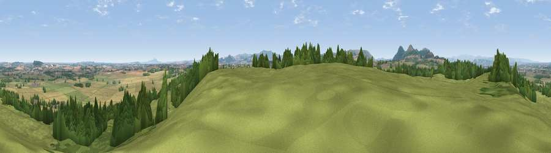

Viewpoint near Alberbury
#7797 in England · top 31% of its area beats it · near AlberburyWhere it is
The exact computed spot (SJ 35950 13525). Click the marker for map links.
The view, rendered

A 360° render of this exact spot computed from the terrain model, tree cover and land cover — summer colours, afternoon light, calibrated against photographs of famous viewpoints. Real trees, hedges and buildings will differ in detail.
The panorama
Grey silhouette: terrain skyline in each direction (720 bearings, Earth curvature and refraction included). Dashed green: skyline with trees (+15 m) and buildings (+8 m) as obstacles. Blue strip: how far the ground is visible on each bearing.
Where the view opens
Wedge length = distance to the farthest visible ground on that bearing (vegetation-aware). Rings at 10, 25 and 50 km.
What fills the view
47% grassland · 31% cropland · 21% woodland ·
Angular shares of the visible panorama (visual magnitude), not map area. Landscape diversity 0.47 (0–1 Shannon).
Key numbers
More beautiful places nearby
The staircase of upgrades: each row has a higher view potential than everything closer. Driving times are estimates from straight-line distance, calibrated against real road routing — check an actual route before setting out.
| Place | Direction | Drive | Score |
|---|---|---|---|
| Viewpoint near Melverley | W · 4 km | ~9 min | 74.2 |
| Viewpoint near Melverley | W · 5 km | ~10 min | 78.2 |
| Viewpoint near Halfway House | W · 5 km | ~12 min | 83.3 |
| The Lawley | SE · 21 km | ~35 min | 85.8 |
| Viewpoint near Little Wenlock | ESE · 27 km | ~43 min | 86.6 |
| North Hill | SSE · 79 km | ~102 min | 86.8 |
| Worcestershire Beacon | SSE · 80 km | ~104 min | 87.1 |
| Viewpoint near Cartmel | N · 166 km | ~188 min | 87.2 |
52.71557, -2.94960 · source: screening · position refined by local search. Computed location — check access rights before visiting.